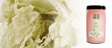

📜
Welcome
Tairou Kombu has been crafting premium tororo kombu in Hikone, Shiga since 1980. Using only the finest Donan Shirokauchi-hama kelp, our tororo kombu is shaved to 0.02mm thinness across 8 meticulous production steps — delivering rich umami flavor and a delicate texture unlike any other.
Whether you're looking for a daily cooking ingredient or a unique Japanese gift, we deliver freshly shaved kombu straight from Hikone to your door.
⭐
Featured Product

Our Most Popular Product
Tairou Tororo (60g)
Each sheet of kombu is individually packed to preserve its delicate, freshly shaved texture. Stored in a convenient cylinder container (8cm×8cm×15cm high) for easy dispensing and long-term freshness. Perfect as a small gift or souvenir.
¥1,460 (tax incl.)
View Details
📢
News & Updates
- 2026.05.05 Greeting May has arrived.
- 2026.03.01 Update Effective March 1, product specifications, contents, and prices have been revised due to changes in packaging material and raw kombu costs. Thank you for your understanding.